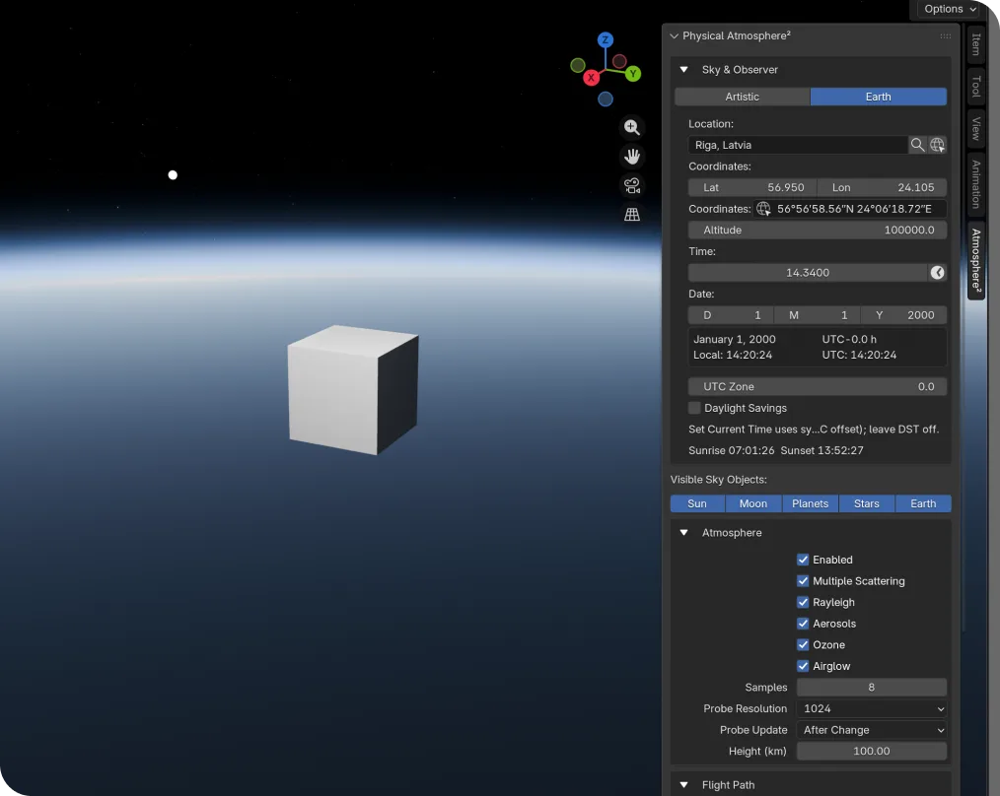
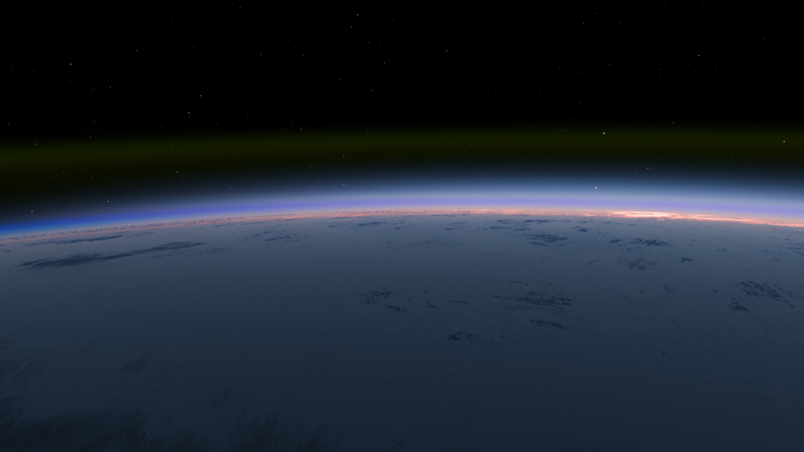
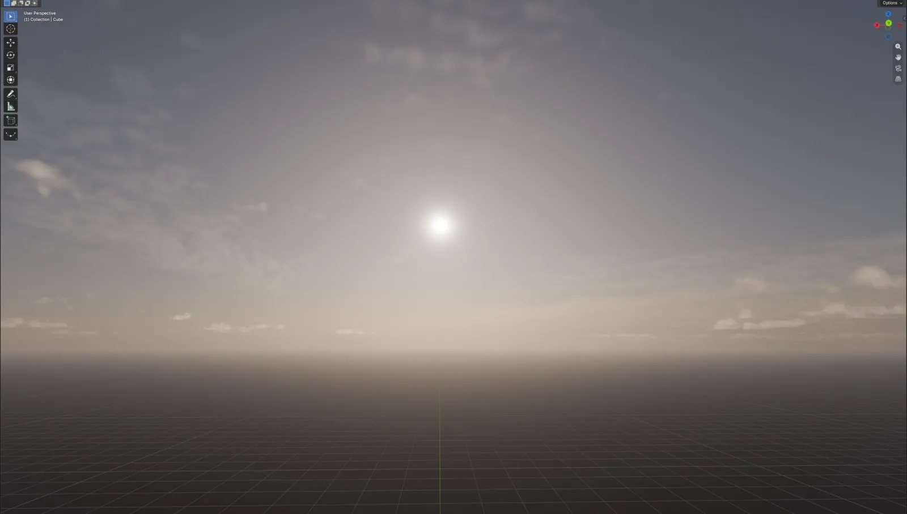
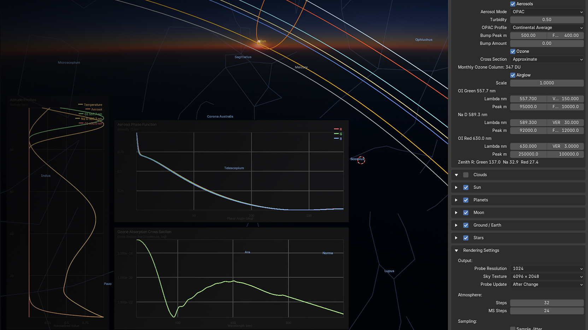
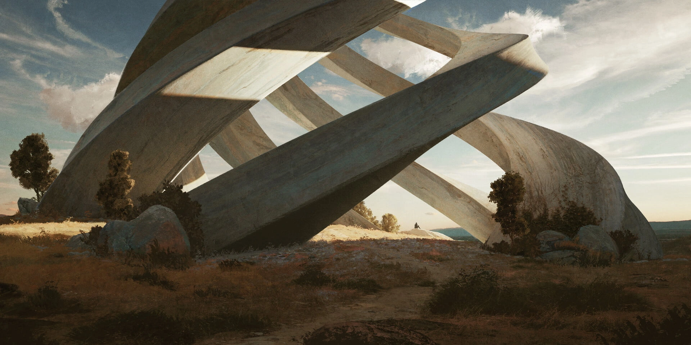
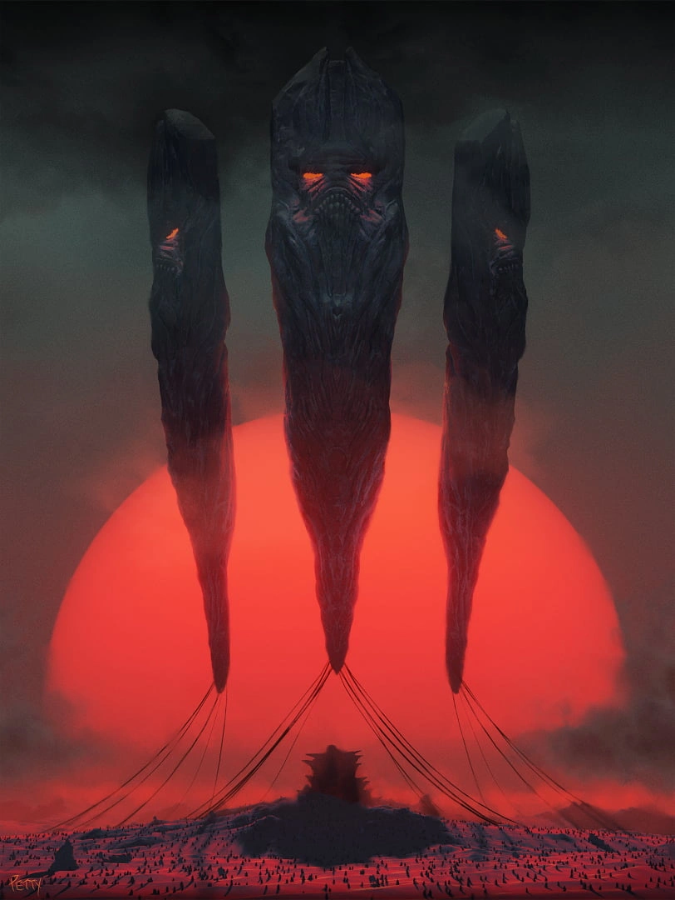
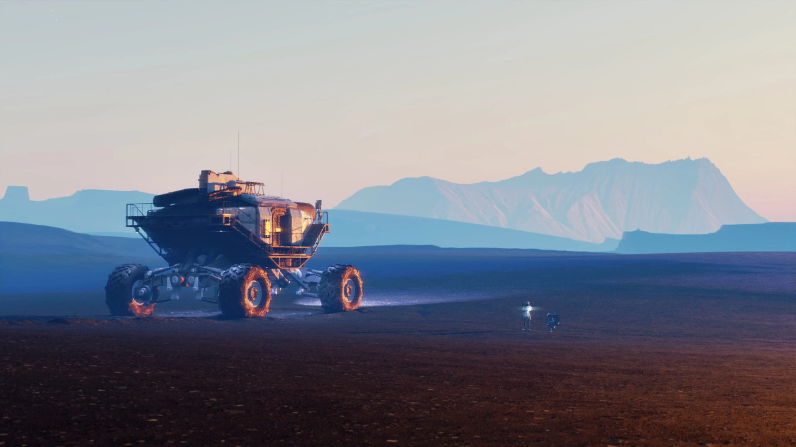
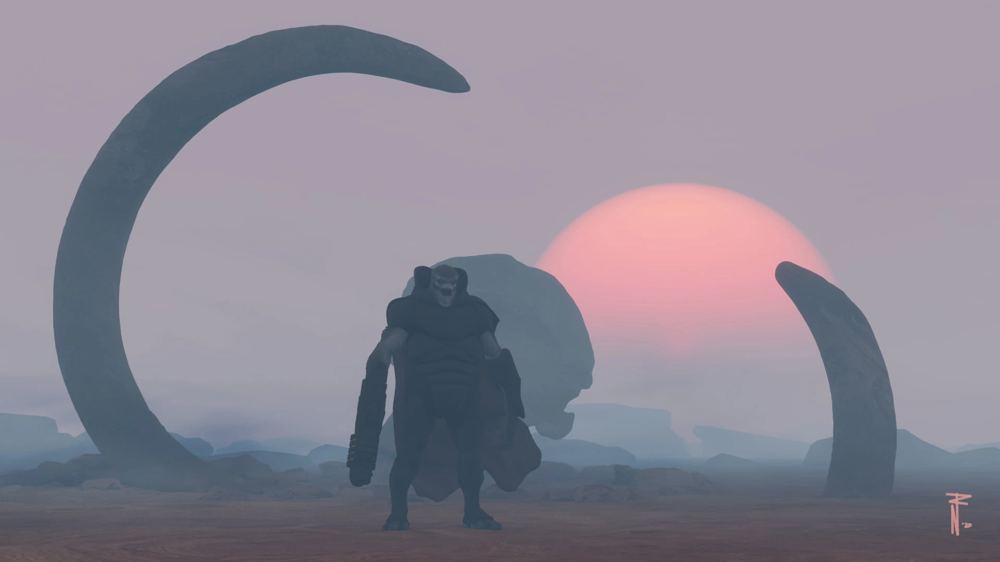

Clouds
Volumetric. Procedural.
Volumetric clouds that render in real time. Highly customisable in 3 procedural cloud layers. Move a slider, watch them shift.

Watch atmosphere and lighting update instantly as you work in the viewport.
Volumetric. Procedural.
Volumetric clouds that render in real time. Highly customisable in 3 procedural cloud layers. Move a slider, watch them shift.


Verified by Physics
That matches reality
Set date, time and location for exact positions for sun and moon.
With your scene
Clouds and atmosphere respond to objects in your scene. Real occlusion and shadows, not a flat backdrop.
For memorable nights
Because we can

Based on OPAC OPAC – Optical Properties of Aerosols and Clouds A scientific dataset that measures how real airborne particles (soot, dust, sea salt, water droplets) absorb and scatter sunlight. We feed those measurements into the renderer so the haze you see is physically accurate, not painted in. opac.userweb.mwn.de data

For full control
Every physics parameter unlocked. Dial in scattering, ozone, fog, and more when you need absolute control.
At any scale
Atmosphere that works up close with small objects and for scenes outside the planet. One continuous sky at every scale.
Trusted by your eye
The secret to photorealism isn't the big things. It's the subtle physics your eye learned to trust.
|
Atmosphere2
New and updated
Physical Atmosphere2 |
PSA
Physical Starlight
and Atmosphere |
Sky Texture
Blender Built-in
Sky Texture Modifier |
|
|---|---|---|---|
| Atmosphere | |||
| Multiple Scattering Softens atmospheric light by bouncing it through the air, giving skies and horizons a richer result. Multiple Scattering | ✓ | ‒ | ✓ |
| Round Planet Keeps the horizon and atmosphere curvature believable for large scale shots and space views. Round Planet | ✓ | ‒ | ‒ |
| Spectral Atmosphere Uses wavelength-aware color behavior so sunsets, skies and haze feel more physically grounded. Spectral atmosphere | ✓ | ‒ | ‒ |
| Atmospheric Refraction Light bends as it passes through air of varying density — keeps the horizon and sunset positions astronomically correct. Atmospheric Refraction | ✓ | ‒ | ‒ |
| Air Glow Faint natural glow from the upper atmosphere that gives deep night skies depth instead of pitch black. Air Glow | ✓ | ‒ | ‒ |
| Ozone Integral Models how the ozone layer tints twilight, especially that distinctive blue-purple band low on the horizon. Ozone Integral | ✓ | ‒ | ‒ |
| Pollution (OPAC) Real-world aerosol and pollution data so haze, smog and dust look physically grounded rather than just darker air. Pollution OPAC | ✓ | ‒ | ‒ |
| Earth Texture True-Earth surface and cloud cover for shots from above the atmosphere, so the planet looks like home. Earth Texture | ✓ | ‒ | ‒ |
| Sky & Lighting | |||
| Clouds Volumetric clouds driven by procedural noise — shape, density and lighting are all calculated, not painted on. Clouds | ✓ | ✓ | ‒ |
| Night Sky Star field and planet positions that match real astronomy for a given date and location. Night Sky | ✓ | ✓ | ‒ |
| Spherical Sun The sun rendered as a true sphere — not a billboard — so its glow, refraction and limb darkening feel right. Spherical Sun | ✓ | ‒ | ‒ |
| Eclipses Solar and lunar eclipses solved geometrically — set the date and the alignment just works. Eclipses | ✓ | ‒ | ‒ |
| Celestial Objects | |||
| Moon Real moon phase, position and surface texture driven by the scene date and observer location. Moon | ✓ | ✓ | ‒ |
| Real Stars Star catalogue with real coordinates and magnitudes so the night sky matches what you would actually see. Real Stars | ✓ | ✓ | ‒ |
| Constellations Optional constellation overlay for previs and orientation when composing night-sky shots. Constellations | ✓ | ‒ | ‒ |
| Workflow | |||
| Artistic Controls Nudge the physics where you need to — adjust the mood without breaking the underlying simulation. Artistic Controls | ✓ | ✓ | ‒ |
| Position Set latitude, longitude, date and time — the addon places the sun, moon and stars accordingly. Position | ✓ | ‒ | ‒ |
| Advanced Mode Exposes every physics knob — multiple-scattering quality, ozone density, fog falloff — for full control. Advanced Mode | ✓ | ‒ | ‒ |
Our team of developers are constantly improving our addons to expand capabilities and ensure support for latest Blender releases. Release notes
Our team and vibrant Discord community will help you with any difficulties along side your journey. Join our Discord




Physical Starlight and Atmosphere has been an invaluable tool for me in my personal/professional work and a huge missing link for lighting in Blender. It still feels like magic every time I use it, I can't recommend it highly enough!
Renault built workflow to export thousands of renders for product variations in 360* view. PSA allowed to rapidly test and configure appropriate lighting conditions for this task. Result was consistent and Photorealistic renders for online product builder.
Physical Starlight and Atmosphere has been an essential add-on for all of my environmental design projects. It gives me such incredibly flexibility and control over the look and feel of my renders. Lighting is key for any project, and this add-on always gives my work that extra edge.
My work life has become super easier since I started using Physical Starlight and Atmosphere, it cut down a lot of technical headache associated with setting up a believable lighting condition and gave me more time to concentrate on the creative part of my design process.
As a lighting artist, focusing on the overall mood of an image is super important. Physical Starlight and Atmosphere is based on reality, so I can spend all of my time iterating on the look without worrying about how to achieve it.
I love the tool. It has been my go-to since I picked it up a couple of months ago.
Feel free to contact us in case you have questions
Get all our addons
Feel free to contact us in case you have questions
Get all our addons
For our previous PSA, you'll always have a 50% discount to upgrade, even after the launch sale. Use code ATMOSPHERE at checkout. If something doesn't work contact us and we will give you the discount manually. Note: during sales, discount codes don't work on Superhive Market.
Any GPU (even integrated) that runs Blender 5.2 comfortably, laptops included.
Desktop-class GPU.
RTX 3060 / RX 6600 or better.
Smooth. Drag the sun, scrub time, it keeps up. Runs almost anywhere. Sky, sun, moon, planets and stars update in real time even on modest laptops.
Bring a real GPU. Volumetric clouds are the heaviest part of the add-on.
Interactive, not always smooth — clouds are heavy even for high-end GPUs at higher quality settings. Navigate on Low quality with Temporal Accumulation on: the image refines to full quality the moment the camera rests. Higher presets are for final frames, not for flying around.
↳ We are currently working on performance optimisation to allow smooth workflow for clouds also on slower GPU models.
Any GPU (even integrated) that runs Blender 5.2 comfortably, laptops included.
Smooth. Drag the sun, scrub time, it keeps up. Runs almost anywhere. Sky, sun, moon, planets and stars update in real time even on modest laptops.
Desktop-class GPU.
RTX 3060 / RX 6600 or better.
Bring a real GPU. Volumetric clouds are the heaviest part of the add-on.
Interactive, not always smooth — clouds are heavy even for high-end GPUs at higher quality settings. Navigate on Low quality with Temporal Accumulation on: the image refines to full quality the moment the camera rests. Higher presets are for final frames, not for flying around.
↳ We are currently working on performance optimisation to allow smooth workflow for clouds also on slower GPU models.